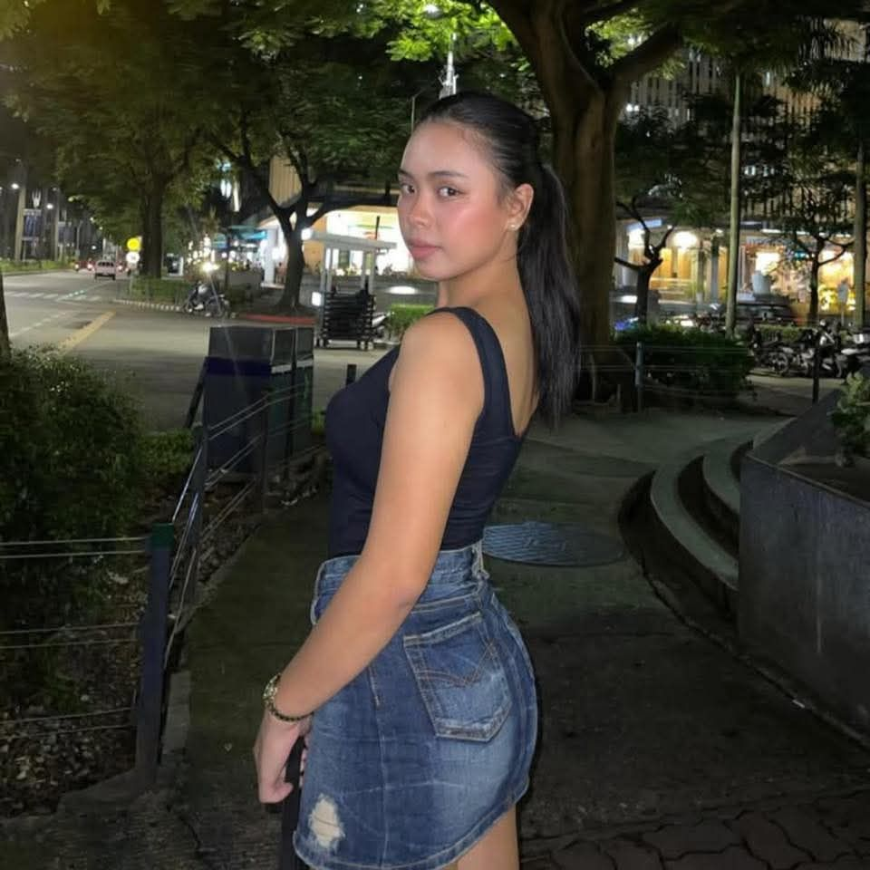

I am
• 19 years old
• A senior high school student
• Live in Talisay City
• I am someone who makes people that I just met comfortable around me.
• Cooking
• Playing COD
• Watching Movies
Strength
• resilience, courage, and the ability to keep going.
Values
• integrity, kindness, and personal growth.
Career Goal:
• To become a professional flight attendant who delivers safe, compassionate service while representing my airline with confidence and excellence.
Personal Goal:
• To live with integrity and resilience while continually growing into the best version of myself.
Academic Goal:
• To successfully complete my training and studies with strong performance while building the knowledge and discipline needed for a career as a flight attendant.
• I love traveling and exploring new cultures, always seeking out unique experiences and learning from the people I meet along the way, which inspires me to stay curious, open-minded, and adventurous in everything I do.